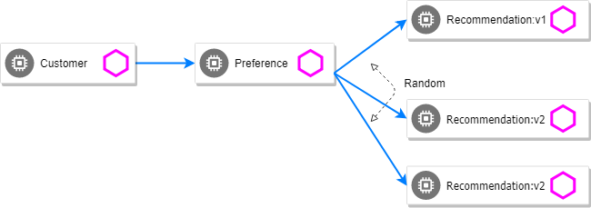

Advanced Route Rules
Traffic Steering
OpenTracing, the tracing tool that Istio uses, adds the user-agent header to its baggage in the Customer service. A baggage is a set of key:value pairs that cross service-boundaries to carry some data that will be available throughout the trace.
From Customer, the baggage is automatically propagated to all downstream services. To enable automatic baggage propagation all intermediate services must to be instrumented with OpenTracing.
The baggage header for user agent has following form baggage-user-agent: <value>.
Set recommendation:v1 and recommendation:v2 as subsets.
kubectl apply -f manifests/istio/routing-simple/recommendation-destination-rule-v1-v2.ymlSet Safari users to v2.

kubectl apply -f manifests/istio/routing-advanced/canary-deployment/recommendation-v2-safari-virtual-service.ymlapiVersion: networking.istio.io/v1alpha3
kind: VirtualService
metadata:
name: recommendation
spec:
hosts:
- recommendation
http:
- route:
match:
- headers:
baggage-user-agent:
regex: .*Safari.*
- destination:
host: recommendation
subset: version-v2
- route:
- destination:
host: recommendation
subset: version-v1Test with a Safari (or even Chrome on Mac since it includes Safari in the string). Safari only sees v2 responses from recommendation
Test with a Firefox browser, it should only see v1 responses from recommendation.
Alternatively, you can also attempt to use the curl -A command to test with different user-agent strings.
curl -A Safari $CUSTOMER_URL
curl -A Firefox $CUSTOMER_URLYou can describe the virtualservice to see its configuration
kubectl get virtualservice -o yamlLoad Balancer
By default, you will see "round-robin" style load-balancing, but you can change it up, with the RANDOM option being fairly visible to the naked eye.
Add another v2 pod to the mix
kubectl scale deployment recommendation-v2 --replicas=2Wait a bit and curl the customer endpoint many times
curl $CUSTOMER_URLAdd a 3rd v2 pod to the mix
kubectl scale deployment recommendation-v2 --replicas=3
NAME READY STATUS RESTARTS AGE
customer-1755156816-cjd2z 2/2 Running 0 1h
preference-3336288630-2cc6f 2/2 Running 0 1h
recommendation-v1-3719512284-bn42p 2/2 Running 0 59m
recommendation-v2-2815683430-97nnf 2/2 Running 0 43m
recommendation-v2-2815683430-d49n6 2/2 Running 0 51m
recommendation-v2-2815683430-tptf2 2/2 Running 0 33mWait for those 2/2 (two containers in each pod) and then poll the customer endpoint:
while true; do curl $CUSTOMER_URL; sleep .5; doneThe results should follow a fairly normal round-robin distribution pattern
customer => preference => recommendation v1 from '99634814-d2z2t': 1145
customer => preference => recommendation v2 from '2819441432-525lh': 1
customer => preference => recommendation v2 from '2819441432-rg45q': 2
customer => preference => recommendation v2 from '2819441432-bs5ck': 181
customer => preference => recommendation v1 from '99634814-d2z2t': 1146
customer => preference => recommendation v2 from '2819441432-rg45q': 3
customer => preference => recommendation v2 from '2819441432-rg45q': 4
customer => preference => recommendation v2 from '2819441432-bs5ck': 182Now, add the Random LB DestinationPolicy
kubectl apply -f manifests/istio/routing-advanced/load-balancer/recommendation-destination-rule-lb_policy_random.ymlkind: DestinationRule
metadata:
name: recommendation
spec:
host: recommendation
trafficPolicy:
loadBalancer:
simple: RANDOMAnd you should see a different pattern of which pod is being selected

customer => preference => recommendation v2 from '2819441432-rg45q': 10
customer => preference => recommendation v2 from '2819441432-525lh': 3
customer => preference => recommendation v2 from '2819441432-rg45q': 11
customer => preference => recommendation v1 from '99634814-d2z2t': 1153
customer => preference => recommendation v1 from '99634814-d2z2t': 1154
customer => preference => recommendation v1 from '99634814-d2z2t': 1155
customer => preference => recommendation v2 from '2819441432-rg45q': 12
customer => preference => recommendation v2 from '2819441432-525lh': 4
customer => preference => recommendation v2 from '2819441432-525lh': 5
customer => preference => recommendation v2 from '2819441432-rg45q': 13
customer => preference => recommendation v2 from '2819441432-rg45q': 14Clean up
kubectl delete -f manifests/istio/routing-advanced/load-balancer/recommendation-destination-rule-lb_policy_random.yml
kubectl scale deployment recommendation-v2 --replicas=1Rate Limiting
| The Rate Limiting rules take some time to be applied and reflected. Be patient here! |
Here we will limit the number of concurrent requests into recommendation v2
Now apply the rate limit handler
kubectl apply -f manifests/istio/routing-advanced/rate-limiting/recommendation_rate_limit_handler.ymlapiVersion: "config.istio.io/v1alpha2"
kind: memquota
metadata:
name: handler
namespace: istio-system
spec:
quotas:
- name: requestcount.quota.istio-system
# default rate limit is 5000qps
maxAmount: 5000
validDuration: 1s
# The first matching override is applied.
# A requestcount instance is checked against override dimensions.
overrides:
- dimensions:
destination: recommendation
destinationVersion: v2
source: preference
maxAmount: 1
validDuration: 1sNow setup the requestcount quota
kubectl apply -f manifests/istio/routing-advanced/rate-limiting/rate_limit_rule.ymlThrow some requests at customer:
while true; do curl $CUSTOMER_URL; sleep .5; doneYou should see some 429 errors:
customer => preference => recommendation v2 from '2819441432-f4ls5': 108
customer => preference => recommendation v1 from '99634814-d2z2t': 1932
customer => preference => recommendation v2 from '2819441432-f4ls5': 109
customer => preference => recommendation v1 from '99634814-d2z2t': 1933
customer => 503 preference => 429 RESOURCE_EXHAUSTED:Quota is exhausted for: RequestCount
customer => preference => recommendation v1 from '99634814-d2z2t': 1934
customer => preference => recommendation v2 from '2819441432-f4ls5': 110
customer => preference => recommendation v1 from '99634814-d2z2t': 1935
customer => 503 preference => 429 RESOURCE_EXHAUSTED:Quota is exhausted for: RequestCount
customer => preference => recommendation v1 from '99634814-d2z2t': 1936
customer => preference => recommendation v2 from '2819441432-f4ls5': 111
customer => preference => recommendation v1 from '99634814-d2z2t': 1937
customer => 503 preference => 429 RESOURCE_EXHAUSTED:Quota is exhausted for: RequestCount
customer => preference => recommendation v1 from '99634814-d2z2t': 1938
customer => preference => recommendation v2 from '2819441432-f4ls5': 112Clean up
kubectl delete -f manifests/istio/routing-advanced/rate-limiting/rate_limit_rule.yml
kubectl delete -f manifests/istio/routing-advanced/rate-limiting/recommendation_rate_limit_handler.yml